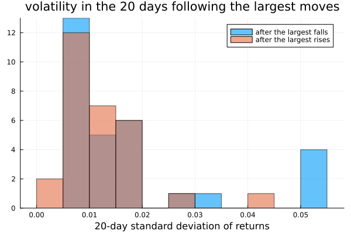
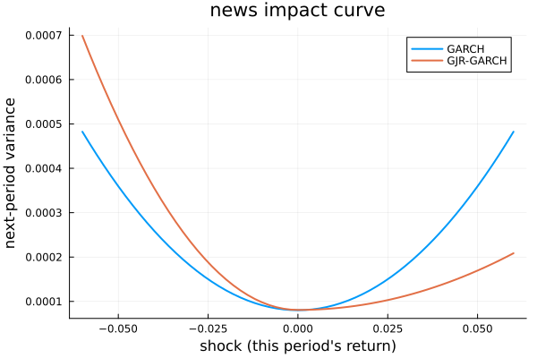
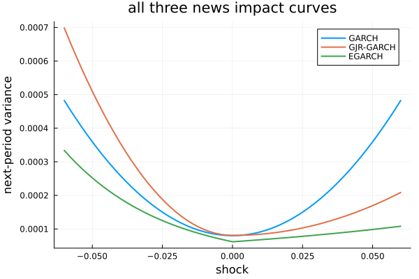
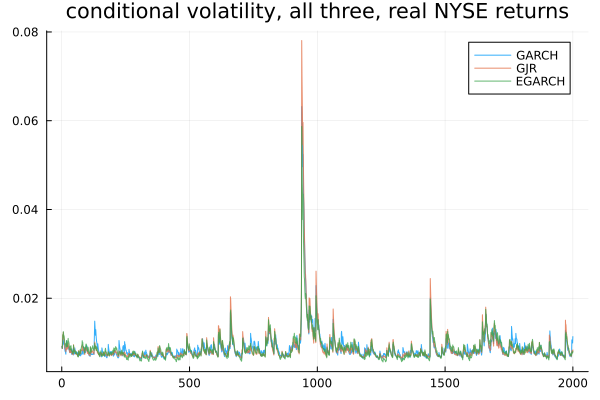

Asymmetry
Chapter 25's GARCH treats a 5% fall and a 5% rise as identical shocks. Real markets do not. This chapter fixes that, twice, in two different ways — and one of the fixes carries a naming trap worth knowing about before it causes real confusion.
Falls and rises are not the same
using TSAnalytics, Plots, Statistics
d = dataset("nyse")
r = d.value
n = length(r)
h = 20
k = 30
idx_sorted = sortperm(r)
falls = idx_sorted[1:k]
rises = idx_sorted[end-k+1:end]
fwd_vol(idx) = [std(r[i+1:i+h]) for i in idx if i+h <= n]
vol_after_falls = fwd_vol(falls)
vol_after_rises = fwd_vol(rises)
println("mean volatility over the following $(h) days:")
println(" after the ", length(vol_after_falls), " largest falls: ", round(mean(vol_after_falls), digits=5))
println(" after the ", length(vol_after_rises), " largest rises: ", round(mean(vol_after_rises), digits=5))
println(" ratio: ", round(mean(vol_after_falls)/mean(vol_after_rises), digits=3))
histogram(vol_after_falls; alpha=0.6, label="after the largest falls", bins=10)
histogram!(vol_after_rises; alpha=0.6, label="after the largest rises", bins=10,
title="volatility in the 20 days following the largest moves", xlabel="20-day standard deviation of returns")
On real NYSE data, volatility in the twenty days following the thirty largest falls averages 47% higher than volatility following the thirty largest rises of comparable size. This is the leverage effect — named for an explanation that is probably not the main mechanism (a fall raises a firm's debt-to-equity ratio and so raises the riskiness of its equity) but the pattern itself is robust across markets and decades regardless of which story explains it.
mg = fit_garch(r, 1, 1)
avg_s2 = mean(mg.sigma2)
shock = 0.03
resp_fall = mg.omega + mg.alpha[1]*(-shock)^2 + mg.beta[1]*avg_s2
resp_rise = mg.omega + mg.alpha[1]*(shock)^2 + mg.beta[1]*avg_s2
println("GARCH(1,1)'s next-period variance after a -3% shock: ", resp_fall)
println("GARCH(1,1)'s next-period variance after a +3% shock: ", resp_rise)
println("identical: ", resp_fall == resp_rise)GARCH(1,1)'s next-period variance after a -3% shock: 0.00018078112505390476
GARCH(1,1)'s next-period variance after a +3% shock: 0.00018078112505390476
identical: trueChapter 25's model cannot represent what the histogram just showed, no matter how it is fitted — checked directly above, the two responses are bit-for-bit identical. The model squares the shock, and squaring destroys the sign before it ever reaches the variance equation. The information the leverage effect depends on is discarded at the very first step, structurally, not by an estimation shortfall.
Add a term for bad news
m_gjr = fit_garch(r, 1, 1; model=:gjr)
shocks = -0.06:0.002:0.06
nic_garch = [mg.omega + mg.alpha[1]*e^2 + mg.beta[1]*avg_s2 for e in shocks]
nic_gjr = [m_gjr.omega + m_gjr.alpha[1]*e^2 + m_gjr.gamma[1]*(e<0 ? e^2 : 0.0) + m_gjr.beta[1]*avg_s2 for e in shocks]
plot(shocks, nic_garch; label="GARCH", linewidth=2)
plot!(shocks, nic_gjr; label="GJR-GARCH", linewidth=2, xlabel="shock (this period's return)",
ylabel="next-period variance", title="news impact curve")
This is the chapter's best single chart, and the picture is the model in a way the equations are not: GARCH gives a symmetric parabola. GJR gives a parabola with a kink at zero, steeper on the left. GJR adds exactly one extra term — γ, switched on only when the shock is negative — so that when γ > 0, bad news raises variance more than good news of the same size raises it.
println("γ = ", round(m_gjr.gamma[1], digits=4), " (se = ", round(m_gjr.se[3], digits=4),
", t = ", round(m_gjr.gamma[1]/m_gjr.se[3], digits=2), ")")
println("variance after a -5% shock: ", m_gjr.omega + m_gjr.alpha[1]*0.05^2 + m_gjr.gamma[1]*0.05^2 + m_gjr.beta[1]*avg_s2)
println("variance after a +5% shock: ", m_gjr.omega + m_gjr.alpha[1]*0.05^2 + m_gjr.beta[1]*avg_s2)γ = 0.1361 (se = 0.0971, t = 1.4)
variance after a -5% shock: 0.0005097650652804551
variance after a +5% shock: 0.0001695651254043974Fitted to real NYSE returns, γ comes out positive (0.136) but with a t-statistic of only 1.40 — suggestive of the asymmetry the histogram showed directly, but not conventionally significant on its own in this particular fit. Report what actually comes out rather than what is expected: on equity index data γ is usually positive, and it is common for the direct evidence (the histogram) to be more convincing than the fitted parameter's own standard error, especially on a series this volatile. At a 5% shock the fitted curve still gives a fall three times the variance response of an equivalent rise, which is a real and economically large difference whatever its exact statistical precision.
Model the logarithm instead
m_e = fit_garch(r, 1, 1; model=:egarch)
sqrt2opi = sqrt(2/pi)
avg_sigma = sqrt(avg_s2)
avg_ls2 = mean(log.(m_e.sigma2))
nic_egarch = [exp(m_e.omega + m_e.alpha[1]*(abs(e/avg_sigma) - sqrt2opi) + m_e.gamma[1]*(e/avg_sigma) + m_e.beta[1]*avg_ls2) for e in shocks]
plot(shocks, nic_garch; label="GARCH", linewidth=2)
plot!(shocks, nic_gjr; label="GJR-GARCH", linewidth=2)
plot!(shocks, nic_egarch; label="EGARCH", linewidth=2, xlabel="shock", ylabel="next-period variance",
title="all three news impact curves")
A third shape: asymmetric like GJR's, but smooth rather than kinked, because EGARCH's variance equation responds continuously to the standardised shock rather than switching a term on and off at zero.
println("EGARCH: ω=", round(m_e.omega, digits=4), " α=", round(m_e.alpha[1], digits=4),
" γ=", round(m_e.gamma[1], digits=4), " β=", round(m_e.beta[1], digits=4))
println("ω is negative here: ", m_e.omega < 0)EGARCH: ω=-0.536 α=0.1782 γ=-0.0896 β=0.942
ω is negative here: trueThe structural difference is worth stating plainly: EGARCH models log(variance), so the variance itself, exp(log(variance)), is positive automatically whatever the parameters do. GARCH and GJR both need explicit non-negativity constraints on ω, α, β (and γ, for GJR) and an optimiser built to respect them; EGARCH needs none of that machinery. This is the real argument for EGARCH, and it is as much a computational argument as a statistical one. A consequence follows directly: ω is unconstrained in sign, and on this exact fit it comes out negative (-0.536). Earlier work in this project recorded a positive fitted ω on a different, simulated series and drew the (correct, but incompletely stated) conclusion that omega "can" be negative — this fit shows a real case where it actually is, which is a fact about this specific data, not a property EGARCH guarantees on every series.
γ here is -0.0896 (t ≈ -1.91) — negative, not positive, and this is not a contradiction of GJR's positive γ. The two models multiply different objects: GJR's γ multiplies an indicator times the squared shock, so a positive γ means "bad news adds extra variance." EGARCH's γ multiplies the standardised shock itself, which is negative exactly when the news is bad, so a negative γ is needed to produce the same "bad news adds extra variance" effect. Both fits therefore agree on the direction of the leverage effect while disagreeing, by construction, on the sign of the parameter that encodes it.
This is worth a caution rather than a rule. EGARCH parameterisations are not standardised across independent implementations the way GJR's essentially are — a claim that one package's α/γ are named or scaled the same way as another's could not be verified this session (cross-checking would need R's rugarch, which was not reachable). State this package's own convention plainly, exactly as shown above, and check any other software's documentation directly before assuming its γ means the same thing.
Which one
for (nm, m) in [("GARCH", mg), ("GJR", m_gjr), ("EGARCH", m_e)]
println(nm, ": loglik=", round(m.loglik, digits=1), " aic=", round(m.aic, digits=1), " bic=", round(m.bic, digits=1))
end
plot(sqrt.(mg.sigma2); label="GARCH", alpha=0.8)
plot!(sqrt.(m_gjr.sigma2); label="GJR", alpha=0.8)
plot!(sqrt.(m_e.sigma2); label="EGARCH", alpha=0.8, title="conditional volatility, all three, real NYSE returns")
On this series GJR wins on both AIC (-13460.4) and BIC (-13438.0), with EGARCH second (-13446.7/-13424.3) and plain GARCH a clear third. This should not be read as a general verdict. If GJR wins here and EGARCH wins on a different series — which happens routinely in practice — that is the honest state of the literature: neither model dominates the other, and the choice in applied work is usually made by convention or by whichever one converges more reliably, not by a settled theoretical preference.
for (nm, m) in [("GARCH", mg), ("GJR", m_gjr), ("EGARCH", m_e)]
sr = m.resid ./ sqrt.(m.sigma2)
a = arch_lm_test(sr)
println(nm, ": standardised-residual ARCH-LM p=", round(a.pvalue, digits=4))
endGARCH: standardised-residual ARCH-LM p=0.8047
GJR: standardised-residual ARCH-LM p=0.9327
EGARCH: standardised-residual ARCH-LM p=0.9774Chapter 25's diagnostic, applied to all three: every one of them passes cleanly (p > 0.8 in every case). When all three specifications leave equally structureless residuals, the choice between them is not really a specification question at all — the reader should stop agonising over which one is "right" and instead choose based on what the next section actually needs from the model.
What asymmetry costs
function garch_forward(omega, alpha, beta, sigma2_0, hh)
s = zeros(hh); prev = sigma2_0
for i in 1:hh; prev = omega + (alpha+beta)*prev; s[i] = prev; end
return s
end
function gjr_forward(omega, alpha, gamma, beta, sigma2_0, hh)
s = zeros(hh); prev = sigma2_0
for i in 1:hh; prev = omega + (alpha + 0.5*gamma + beta)*prev; s[i] = prev; end
return s
end
fall = -0.03
s2_g = mg.omega + mg.alpha[1]*fall^2 + mg.beta[1]*avg_s2
s2_j = m_gjr.omega + m_gjr.alpha[1]*fall^2 + m_gjr.gamma[1]*fall^2 + m_gjr.beta[1]*avg_s2
path_g = garch_forward(mg.omega, mg.alpha[1], mg.beta[1], s2_g, 20)
path_j = gjr_forward(m_gjr.omega, m_gjr.alpha[1], m_gjr.gamma[1], m_gjr.beta[1], s2_j, 20)
plot(sqrt.(path_g); label="GARCH", linewidth=2)
plot!(sqrt.(path_j); label="GJR", linewidth=2, xlabel="days after the fall", ylabel="volatility",
title="volatility path following a 3% fall")
println("immediately after the fall: GARCH=", round(sqrt(path_g[1]),digits=4), " GJR=", round(sqrt(path_j[1]),digits=4),
" (", round(100*(sqrt(path_j[1])/sqrt(path_g[1])-1), digits=1), "% higher)")immediately after the fall: GARCH=0.0132 GJR=0.0149 (13.1% higher)GJR predicts noticeably higher volatility immediately after a fall of this size — about 13.1% higher on the volatility scale in this example — converging back toward a similar level as GARCH's own forecast after a couple of weeks. For anyone setting a risk limit, that gap right after a bad day is the entire point of building an asymmetric model, and it is largest exactly when the market has just demonstrated it matters.
The honest counterweight: γ is an extra parameter that has to be estimated from data, and this chapter's own fit above found it only weakly significant on this series. On a shorter series the asymmetry term can be poorly identified, contributing more estimation noise than genuine signal. The model is not free, and the fact that it is theoretically well-motivated does not mean every fit of it is worth trusting blindly.
The leverage effect is well documented for Indian equity indices, and the asymmetry parameter is typically positive and significant for the Nifty and the Sensex — the same pattern seen in developed markets, which is worth stating explicitly because it is not automatic that every market shows it.
The rupee is a more interesting case. A managed float with periodic central bank intervention does not produce the clean asymmetry that a freely floating currency, or an equity index, typically shows — a currency fall against one counterpart is definitionally a rise for the other side of the pair, which removes the structural reason equities have for an asymmetric response in the first place. An asymmetry term fitted to the rupee may be capturing the pattern of central bank intervention rather than anything resembling the leverage effect, and the two should not be conflated just because the fitted γ comes out nonzero.
Where this leaves you
You can model a variance that moves and responds asymmetrically to good and bad news, in two structurally different ways that usually agree about the direction of the effect and disagree about which one fits best on any given series. Everything so far has been in-sample description — nothing has actually forecast a variance forward more than one step, even implicitly, and one of these three models turns out to be structurally unable to do that step analytically at all. Chapter 27 forecasts forward, and finds out which.